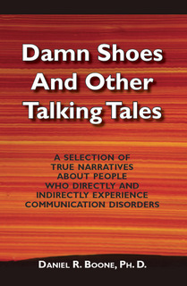
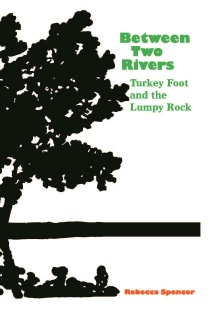
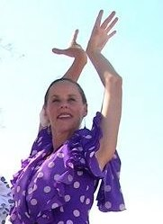
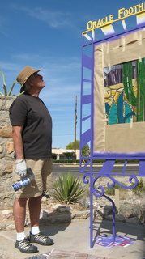
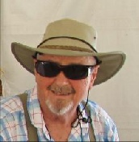
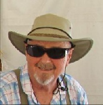
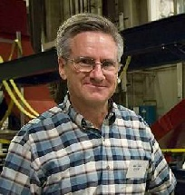
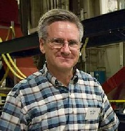

Neighbors
There are so many advantages to living where we do - the views, the wildlife, the native desert, the location, the large properties. But, it’s the people of Oracle Foothills neighborhood that truly make it special. They are a fascinating mix of talents, origins, occupations, interests, personalities and backgrounds. On this page we pay tribute to some of the many individuals who make up this wonderful place. If you know someone you would like to see featured, please send their name along to Carole DeAngeli.
Scroll to the bottom of the page to see Remembering Neighbors We Have Lost
After a long, rewarding career in speech pathology, Dan Boone has many interesting tales to tell of his experiences and clients. Having published 15 professional books in the past 40 years with established publishers, Dan’s new book, Damn Shoes and Other Talking Tales, is a self-publishing venture.
The book is a collection of short stories (2-3 pages each) about people he has worked with over his 58-year career with problems of aphasia, dementia, neurological disease, stuttering, or voice problems. The reactions of the people around patients who talk differently often provoke laughter or tears (and sometimes both.)
For more information, take a look at the website, www.damnshoes.net.
Dan Boone
Marge Pellegrino
Passionate about words and books, Marge puts her passion to work in her Owl and Panther Project, in which she helps those affected by trauma, especially refugees, through creative writing and counseling. Teaching writing workshops and writing her own books are two more ways in which Marge finds expression for her love of writing.
Marge’s most recent book, Journey of Dreams, tells the story of the harrowing experiences of a Guatemalan family’s journey as refugees to the United States. Soon after publication, the book began garnering awards, including the prestigious Libraries Ltd 2009 Judy Goddard Award for young adult literature.
Other books include Too Nice, My Grandma’s the Mayor, I Don’t Have an Uncle Phil Anymore and The Folded Spiral in the Classroom: Circular Bookmaking Across the Curriculum.
Read more about Marge on her website, margepellegrino.com
Rebecca Spencer
While continuing to work in the education field as a school psychologist, Rebecca is now dipping her pen into the world of children’s fiction with the publication of her first book, Between Two Rivers - Turkey Foot and the Lumpy Rock.
Set on the Iowa plains during the Civil War, the story brings together children from three disparate backgrounds whose struggles give them a common bond.
Rebecca is now working on her second book which she hopes will be published this year.
Read more about Rebecca’s book on her website.
A true desert rat, Bill proclaims his love of dry and desolate places in the many books and articles he has written on the subject. When he is not writing or researching, he is exploring, hiking, experiencing and studying the desert. Bill’s love of all things desert began as a young boy when his family moved to Tucson, and his fascination with the creatures of the dry land continues to this day. His writings inspire us to learn more, understand more and care more about this beautiful place we call home.
In addition to contributing articles to Arizona Highways and numerous journals, Bill is a research associate with the University of Arizona’s Southwest Center, an active advocate for the Sonoran Desert National Park and the author/co-author of several books.
- Desert Duty: On the Line with the U.S. Border Patrol
- Desert Babies A-Z
- Organ Pipe National Monument: Where Edges Meet
- Sunshot: Wonder and Peril in the Gran Desierto
- Our Sonoran Desert
- Dry Borders: Great Natural Reserves of the Sonoran Desert
Take a journey with Bill into the desert through his writings and the term desert will have new meaning for you. Bill’s books can be found on Amazon and in local bookstores.
Bill Broyles
Barbara Schuessler
La Flamencista!
Dance is a passion with Barbara, and especially flamenco and Spanish classical. She has studied with the masters both in Spain and the U.S. And now teaches others the beautiful art form. Performing as a soloist and with troupes, Barbara can be seen at various venues around Tucson displaying her exciting technique. She teaches flamenco at Creative Dance Arts On Oracle Rd. and currently offers programs for beginners and Level 2, as well as, private and semi-private classes. Barbara has performed many times for the neighborhood at our Annual Picnic, giving us a chance to see first hand a dance form with which not many Americans are familiar. To read more about Barbara or get details on her classes, go to her website.


Jay DeAngeli
No page on the Oracle Foothills Neighbors would be complete without a mention of Jay. He is the glue that holds this neighborhood together - the organizer, chef and hardest worker at the Neighborhood Picnic; the guy who removes graffiti; organizes and leads the streetside trimming sessions; the long term board member and president of the association, now treasurer and membership chair; the guy who works with the County to get the streets repaired, the modular houses removed, the vandals arrested and the signs repaired and/or replaced; he spearheaded the Mutt Mitts project and keeps the dispensers filled; he worked with several neighbors on the flood plain maps, helping to get them removed from the flood plain; he is always available to answer neighbors’ questions about anything in the neighborhood; many neighbors have been the recipient of his help in their homes or yards; he was instrumental in the transformation of the street islands at Genematas/Canyon View and at Yvon/Nina; the monuments at Agave and at Oracle were improved with his hard work; every year he volunteers on the Dumpster committee, helping neighbors load and entertaining the rest of the crew. This doesn’t begin to cover all that he has done and continues to do. It is safe to say that Oracle Foothills Neighborhood Association would not exist without Jay. Thank You, Jay!
Sue Sisler and Scott Ruth
It's a marriage of families, pets and yes, even careers. Sue and Scott met online and five years into their relationship they bought a house, got married and moved into Oracle Foothills just about 6 months ago. Scott instantly became a grandfather - to 10! They melded their pets - his cat (she is allergic) named Simba, her tortoise named TK, her dog, 8-year-old toy poodle, Maggie, and their 16-week-old Shih Tzu/Yorkie, Bruno. And, in addition to her career in real estate, Sue also works for Scott in his business.
Scott was born and spent his childhood years in Chicago, but graduated from Catalina HS in Tucson and received his Bachelor's degree at U of A before going to Washington State University for his DVM. Veterinary medicine took him to places as diverse as Las Vegas, Washington state and California, before settling back in Tucson. Scott is considered an expert in high-volume spay/neuter surgery and these days runs a busy, successful and innovative spay and neuter clinic. Arizona Spay/Neuter Clinic specializes not only in low cost spaying and neutering of cats and dogs, but also vaccinations, microchipping, Pima County licensing, and more. Update: Scott has sold the business and retired! Congratulations, Scott!
Contrasting Scott's diverse locales, Sue arrived in Tucson at one year of age with her military family and has been here ever since, graduating from Rincon High School. Her four daughters, ten grandchildren and two brothers are all here too. For 28 years, Sue has been selling real estate in Tucson, most recently with Long Realty. Prior to that, she spent her entire career with A.P. Brown Co. You can find Sue online at www.susansisler.com/
Since buying their home on Canyon View Drive, Scott and Sue have spent most of their efforts making their back yard not only beautiful, but perfectly adapted for their pet family. A small patch of grass provides the dogs a place to play and some delicious food for the tortoise. The walls prevent the pets' escape and keeps them safe while still maximizing the fabulous south-facing view.
We welcome Scott, Sue and their pet family to Oracle Foothills!
Bill Freedman
Jacki Elder
Early in the morning, over the years, before I even knew her name, I could count on a smile and a wave when I saw Jacki Elder waiting at the bus stop at Nina and Yvon with her boys Hank and Angus. Hank’s well into high school now and I only spy Jacki walking her dog Juneau alone or with her husband Sandy. We've chatted briefly over the years on Halloween night -- Steve and I are grateful to be able to count on at least one group of costumed trick-or-treaters.
I loved finding out more about her. Jacki’s amazing! I knew she’d have to be because I’d heard about her organizing the public appearance of the Dalai Lama to Tucson a few years back. But I didn’t know much more than that about her until the Annual Picnic in Sig and Nan's wash this October.
Jacki grew up in Chicago and met Sandy at the University of Wisconsin in Madison. Sandy’s family hails from New York and has a several-generation history in conservation in the Adirondacks. Sandy used to help haul his mom’s bee keeping supplies around as he grew. Sandy’s father also worked to provide affordable housing for elders in Long Island, NY. Sandy and Jacki started their life together in Nepal, outside of Katmandu. Sandy’s master’s work in hydrology brought the couple to Tucson in 1981.
The Elder family moved into their bright and open home at the end of Nina Drive almost 17 ½ years ago. Some of you who’ve been around a while might know Jacki and Sandy were part of the group of community-minded folk who started our neighborhood organization. Jacki successfully stretched her lobbying muscles during the zoning struggle over the land on Genematas, across from the teahouse.
Maybe some of you know Jacki is a Registered Dietitian. She’s worked with folks with Eating Disorders for the last 20 years. She also works with disordered eating, the eating that’s a response to emotion. For ten years she’s worked with Andrew Weils’ Integrative Medicine group. She shares their passion for seeing the medical profession change and embrace more complementary aspects, like their inclusion of nutrition in the medical mix. Jacki champions organic foods--those that haven’t been treated or sprayed -- high life-force foods – fresh, not canned or frozen or processed. She cooks everything from scratch. Her work is about helping people to eat better and make the changes they can. If you'd like to know more about maintaining health through diet, Jacki’s Performance Nutrition office is located at the Racquet Club. You can contact her at: elder@theriver.com.
The folks who owned their house on Nina before the Elders were involved with the Sanctuary movement in the 1980s -- a human rights movement started here in Tucson that saved tens of thousands of Central American refugees’ lives. Under that same roof, Jacki and her family have hosted a new generation of refugees from Tibet. “Working with refugees has given me an appreciation for our country and what it stands for.”
Through the refugee work, Jacki has helped raise funds to start five schools in Kham, Tibet which provide education to 500 Tibetan Nomadic children. “Started from the ground up with the building of the schools. Now, they are up and running for the last 3 years. We’ve even had students graduate recently which is very exciting. I would love to get over there to see all the kids but for now, I do get regular reports and communiqués.”
Jacki was also a key player in securing land for a Buddhist Retreat Center in northern Arizona (www.garchen.com). Once the 107-acre parcel of land surrounded by BLM land had been checked out by the Lamas, a deal needed to be struck. Three people needed to be recruited to buy 10 acres each. The Elders became one of those three. The retreat center was started in 2000. The website allows a virtual tour of the beautiful facility. It’s easy to understand why Jacki loves spending some of each summer up there—even if the Elder property isn’t developed. If you plan a visit to Garchen and notice a porta-potty out by the dirt road leading to the Retreat Center – there’s a good chance that Jacki is in residence.
Jay DeAngeli has been rumored to have put a little pressure on Jacki to rejoin the neighborhood board. She’s served on it more than a few times already. Just after Jacki let Jay know that her endowment work for the Retreat Center was her priority--she needs to raise two million dollars before she’ll be available to serve us again--she promptly received donations that pushed her up to the quarter million mark—I’m not saying anything definite about Jay’s magic – but anyone interested in helping Jacki free up her time sooner than later could consider donating to the retreat center’s endowment fund.
Time constraints didn’t leave enough time to do Jacki justice – so please know she’s way more amazing in person than on this page. I don't think I've ever seen Jacki not smiling, not happy. I learned enough about her rich, emotionally-generous life to understand why.
Marge Pellegrino
Dec. 2008
The Neasham Family (Dec. 05)
Do you know an exceptional person? OFNA is fortunate to have exceptional people making their home within its boundaries. There are noted scientists and scholars, and even actors and artists of many disciplines.
Although the busy researcher or inventor can be hard to find at home, a conversation about their amazing worlds will… amaze you! There are also the unknown shut-ins and the disabled in our little community. Their worlds, and the things they have suffered, are amazing too. However, while they are not hard to find at home, just as few have held conversations with them. The opportunity will not arise at the picnic, workdays, or even by chance during a walk around the block. So, your bold call or visit to their door will be your first contact.
Here’s what to say to break the ice, “Hi! I was reading this article in our neighborhood’s newsletter about meeting our exceptional neighbors. Would any of the exceptional people here like to meet an ordinary neighbor?” The smile you will see will let you relax and enjoy your conversation. Unless, of course, they really are one of the exceptional folk so they have not had a visitor in a long time!
Since almost everyone is out of practice at visiting and making friends these days (the telemarketing and religious professionals included), you should warm-up with an easy house. Try someone new to the neighborhood! Try Fred, Denise, Jon, and Alex Neasham (pronounced knee-sham) at 340 E. Canyon View Drive. It’s the block house just west of the “S” curve through the wash. So, here is the “411” to make this an easy visit. The parents: Fred is a native and works at the U in computing ; Denise is a mid-western transplant and “domestic engineer”. The teenagers: Jon is learning to drive and plays “W.O.W.” constantly; Alex is learning to read and write and loves anything involving cartoons or swimming. They are all in need of going to Weight Watchers for a while. There, now you have plenty of conversation starters!
What is so exceptional there? Well, since Alex is fourteen, it is his autism that has kept him from developing language and other skills at a normal rate. Autism, though not contagious, is a disease that affects everyone in a family by exhausting their creativity and patience. To find out more, call (293-3439), email fred.neasham@gmail.com, or drop by 340 E. Canyon View Drive!
Of course, you realize that if you did visit with a neighbor you just became exceptional yourself. Better yet, you may have just made this holiday season wonderfully memorable for both of you.
Roslyn Mauer
Roslyn “Roz” Mauer lives in Tucson with her twin children, Jane and Will Mauer. The twins attend Orange Grove Middle School. Roslyn makes paintings in both oil and watercolor and specializes in portraiture, florals, and still life. She sells her paintings and takes commissioned work. Roslyn also sells Real Estate with Long Realty. Whatever the task, project, or goal, Roslyn uses her visionary and creative talents to make it happen. Her decisiveness, passion, instincts and experience help her to negotiate to the finish successfully. She loves The Arts, travel, a rich home life, family and friends.
Being born and raised in Oregon, Roslyn did her undergraduate work at Oregon State University and Northwest College of Art. After spending two consecutive summers in Europe, seeing the art and places she studied in college, she attended the University of Arizona where she received her Masters in Art Education, and fell in love with Tucson. Roslyn is inspired by the desert with its colorful palate, forever blue skies and abundance of light!
Sig Eisner
Nan Eisner
Mary Weckesser
Jack McConnell
Glenn Sherwood
Kim Peterson
Richard Schwartz
Frank Laird
Monte Arrowsmith
Royce Arrowsmith
Lynn Bizik
Mayree Braun
Jeannine Brookshire
Ethel Broyles
Frank Broyles
Rich Capurro
Reg Chapman
Betzy Clarkson
Bob Coate
John Crow
Lenny Dillahunty
Al Fishback
Eleanor Formo
Peter Formo
George Genematas
Patricia Genematas
Diane Howland
Jim Howland
Katherine Jackson
Tip Jackson
Donna Josephson
Les Josephson
Helen Kelly
Roy Kyle
Lynn Maricich
Rick Marimow
Myron Morris
Ricardo Muñoz
Marie Peters
Bill Quimby
Jean Quimby
Don Reynolds
Julie Roth
Joseph Vallejo
Dennis Wasko
Betty Yaeger
Richard Yaeger
Don Peters
Tim Bowden
Dan Boone
Bill Friedman
 

Hal Fritts
Ron Kuykendall
IN MEMORIAM

Pam Remington
Roxie Lopez
 

Matt Johns
Fred Neasham
Angelo Dellacona